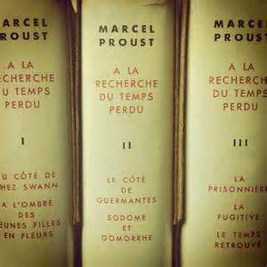

Who Am I ?
What defines oneself? I've always find it very difficult to answer this question. But I guess a description of myself should include "inquisitive", "creative", "curious" and "adventurous". Talk to me about almost every topic, teach me something and I'll be happy!
My Favorite Books
|  |
"A la Recherche Du Temps Perdu" serieThe timeless classic of french author Proust |
|
|
"My Struggle" serieKarl Ove Knausgaard, Norvegian author, is considered the modern Proust and talks about his life in a semi-autobiuographical serie |

|
"Anna Karenina"Tolstoi's master piece, although this title is challenged in light of the genius of the author |
About This Page
This page has been coded during the FullStack program @LeWagon. That was probably the best experience of my entire life.